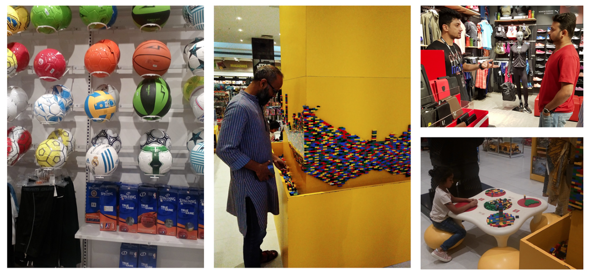
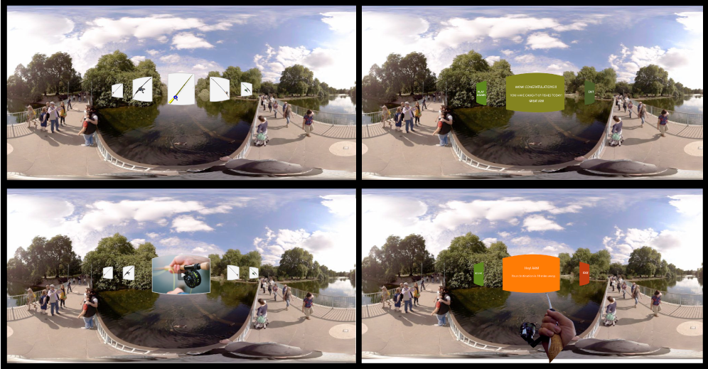

To design a Smart Shelf, a Pop-Up store or an Exhibition space for TCS.
About the project
TCS had approached NID for the possibility of floating a classroom live project. It was a proposed 8 week project, envisioned with participation of both DRE (Design for Retail Experience) and IxD (Interaction Design) students of 3rd semester at NID Bangalore Campus.
The project was into the area of retail in both Digital-Physical platforms. TCS were looking for conceptual explorations to create Smart Shelves, Pop-Up stores and Exhibition spaces, and the choice of product domain was kept open for the students to explore on their own.
From the perspective of Interaction Design this project had the scope of designing the experience using AR/VR in the store, smart cards etc.
My Team and My Role
From left to right: Omkar Khadamkar (DRE), Hemant Gupta (IxD) and Prabhakar Bind (IxD)
We were a team of three students from two disciplines at NID Bangalore, i.e. Design for Retail Experience (DRE) and Interaction Design (IxD). Our team worked as a cohesive group, where everyone contributed from the initial research to conceptualizing the business model of a Pop-Up store (HOP-UP Bus). In this project my roles and responsibilities were taking care of the user research, identifying proto-persona, service designing, 3D modelling creating walkthroughs and VR low fidelity mockup making. All three of us helped each other wherever needed during the project lifecycle, and in the process we learnt a lot from our mistakes and discussions.
Our Approach
We started off with preliminary brainstorming and keywords mapping for the following domains, i.e.
- Pharmaceuticals,
- Cosmetics,
- Luxury Automobiles, and
- Sports
After that we went out to the various stores in Bangalore for understanding the behaviours of customers and business operators, and how they interact with each other and with the products in general.
We covered Porche, BMW & Harley Davidson stores for Luxyry Automobiles domain; for Pharmacy we covered Apollo Pharmacy and two local medicine shops; and for Sports we covered Decathlon, Sports Zone and Puma stores.
Conducting primary research - Interviews, Contextual Inquiry and Observations.
Domain Chosen: Sports/Fitness Pop-Up Store
Based on the study so far and the feedbacks from our faculty & TCS representatives, we decided to proceed ahead with the sports / fitness as our domain and Pop-Up store as the retail platform. Our real journey began, when we arrived at these challenging questions.
If pop up store encourage collaboration of complementary brands, then it can also capture the unexplored new customer segments of the complementary brand. Eventually this entire ecosystem of brands can empower customers.
Along with these questions, we also looked at the frustrations of specific possible customers as well as opportunities of business growth through pop-up stores in the fitness brands. ☞ Reference.
So we ideated, and arrived at energy food and beverages as well as relaxation as complementary categories to integrate with fitness sector.
Not beign FAT does not mean you are FIT.
People do exercise for many reasons but fitness can provide people with a stronger sense of wellbeing including increased relaxation, reduced stress, better sleep and mood, strong immune function but more importantly, it can provide confidence, strength, empowerment, balance and sense of achievement.
⬆ Key Insights identified from the research phase of this project.
⬆ Mind Mapping 4x4 categorisation.
Opportunity Areas - Frustrations of busy urban citizens!

Illustrations made by Omkar.
Design Brief
To design an engaging experience, for urban citizens, to make sports fitness as part of their lifestyle.
Use Case Scenario of Akhil Kukreja


Illustrations made by Omkar, Prabhakar & me.
Proposed Journey Map
Illustrated by Omkar and me.
HOP-UP Bus Details

Plan view diagrams made by Omkar.
Our Solution : HOP-UP Bus Service
As the end deliverable for this project, we proposed a bus service i.e. a business model, which brings complementary brands in the well-beign domain as collaborators, for operating a special bus service for mid to higher management level executives.

⬆ Followed Alexander Osterwalder & Yves Pigneur's 9 Box Business Model Canvas.
To demonstrate the interior of the HOP-UP bus while it is in transit or when parked stationary, we designed the HOP-UP bus using SketchUp (a modelling software), which also had a great assets repository to work with. It took me a bit of trial and error to get the hang of it, and the below two walkthroughs are results of that new learning.
⬆ When the HOP-UP bus is in transit within the city.
⬆ When the HOP-UP bus is stationary within a IT Park parking.
Interaction Design: Perspective
For this module at NID, as interaction designers we were expected to learn about designing AR/VR experiences. Keeping that in mind we explored to design for the virtual reality mockup, where we made use of the VR-Grid and VR Storyboarding Guidlines. This made us understand how to sketch in 360 degree equi-rectangular grids.
⬆ VR Storyboarding Sketches.
After finalizing the screen sketches, we moved onto Adobe Suite to digitalize the VR screens, resulting into images shown below:
⬆ Background image is being used for academic purpose only. Source : www.atmosphaeres.com
{kind=link}
When we created all the needed screens for VR interactions. We used an open source software, called, GoPro VR Player 3.0 to create a VR enabled experience to go through the screens.
Key Takeaways
- This particular project, allowed me to use my 1 year of gained theoretical knowledge of user research into practice. From User Interviews, Contextual Inquiry, to On-field observations.
- Got acquainted to the domain of service design / business model; which is something I find really interesting and challenging at the same time.
- Tried my hands on designing the VR mockup prototypes, which exposed me as an Interaction Designer to a completely new process of making VR Experiences.
- Based on final feedbacks from faculty and reviewers, we found there are gaps in the service model of the project in terms of :
- Service blueprint of a particular use case scenario.
- Interaction touch points between employees and customers!
- How money is being managed in the overall scheme of things?
These were very valid comments and made us learn a great deal about the process of service design.